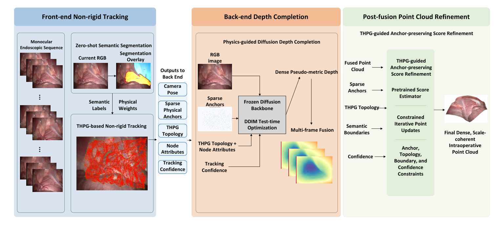
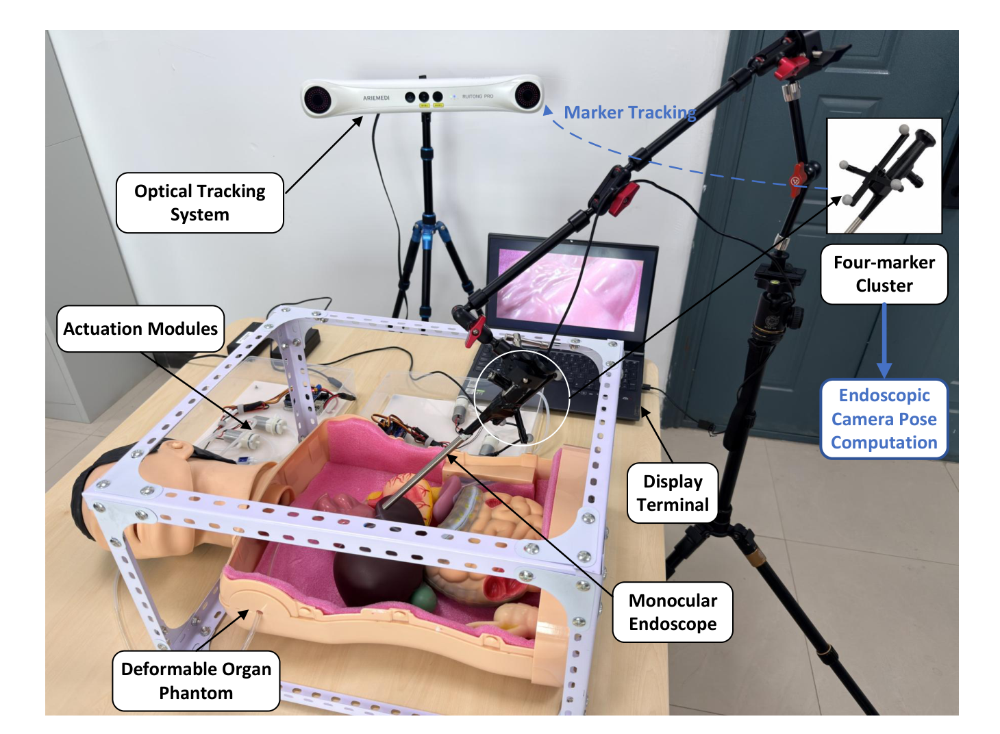
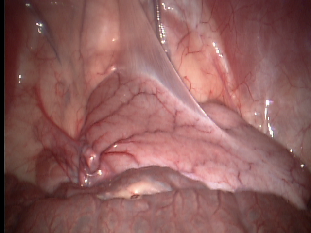
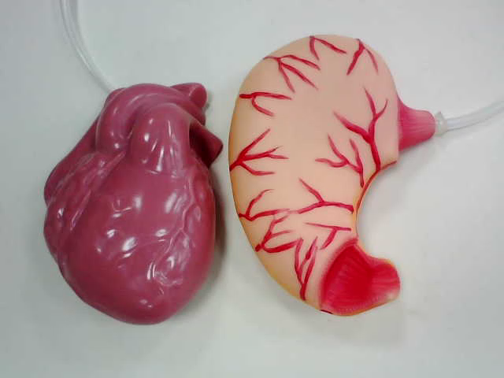
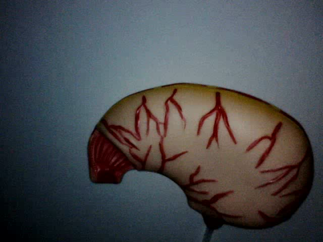
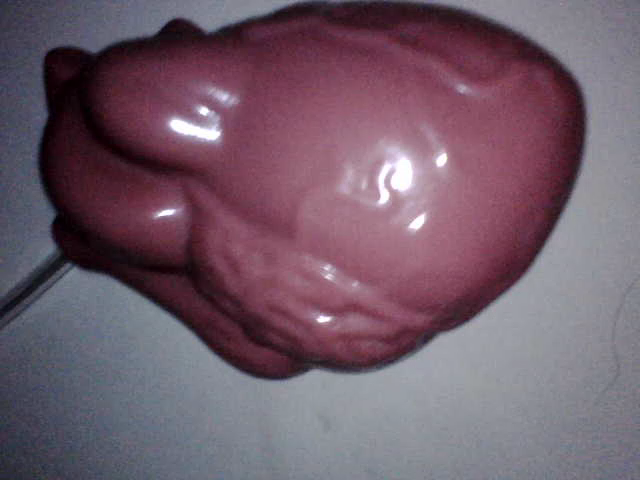

Monocular Non-rigid Endoscopic 3D Reconstruction with Tissue-aware Heterogeneous Physical Priors
Dense and scale-consistent intraoperative point cloud generation from monocular endoscopic video under continuous soft-tissue deformation.

Introduction: This project studies monocular non-rigid endoscopic 3D reconstruction for dense and scale-consistent intraoperative point cloud generation. The proposed method couples a tissue-aware heterogeneous physical graph (THPG) front end with a physics-guided diffusion depth completion back end, and uses structured cross-stage prior propagation to improve sparse tracking stability and dense geometric consistency.
Abstract
Minimally invasive surgery benefits from small incisions and reduced tissue trauma, but reliable intraoperative geometric perception remains essential for image-guided surgical applications. Monocular non-rigid SLAM can recover camera motion and sparse intraoperative structure, yet sparse surfaces provide limited geometric coverage, and dense depth completion may introduce affine scale-and-shift mismatch and cross-frame geometric inconsistency. To address these issues, we propose a monocular non-rigid endoscopic reconstruction method with tissue-aware heterogeneous physical priors.
In the front end, a tissue-aware heterogeneous physical graph (THPG) is constructed from tissue-region priors and node-level relative physical weights to support non-rigid tracking and sparse geometric recovery. In the back end, THPG topology, sparse physical anchors, and tracking states estimated by the front end are propagated as structured guidance for test-time diffusion-based depth completion. After multi-frame fusion, an auxiliary anchor-preserving refinement step suppresses residual high-frequency noise while limiting changes to sparse-anchor alignment and deformation-aware local topology.
Framework
The method follows a cross-stage design in which front-end non-rigid tracking outputs are explicitly reused as structured conditions for dense reconstruction.
Overall framework of the proposed method. The front end estimates camera pose, sparse anchors, THPG topology, node attributes, and tracking confidence, while the back end performs physics-guided diffusion depth completion and multi-frame fusion.
Core modules
- THPG front end: maps tissue-region priors to node-level relative elastic and viscous weights.
- Dynamic topology update: removes edges that no longer satisfy local co-deformation assumptions.
- Physics-guided diffusion: injects sparse anchors, THPG topology, node attributes, and tracking confidence into DDIM optimization.
- Scale-consistent point cloud generation: fuses dense depth across frames and preserves anchor consistency after refinement.
Experimental Setup

Overview of the self-collected deformable organ phantom platform. A monocular endoscope acquires the image stream, actuation modules generate controllable deformation, and an optical tracking system is used only for auxiliary pose evaluation.
Datasets and evaluation
- Public datasets: Hamlyn abdominal-sequence-6, exploration-sequence-20, liver-seq-21, and SCARED Dataset 1 Sequence 2.
- Self-collected data: deformable stomach phantom and cardiac phantom sequences under controllable deformation.
- Front-end evaluation: RMSE, tracked-frame count, ATE, and successful tracking rate.
- Back-end evaluation: MAE and RMSE for dense depth completion.
Platform / Scene Video
Place your self-collected platform video at static/videos/phantom_platform.mp4.
Quantitative Results Comparison
Hamlyn abdominal-seq-6
Hamlyn exploration-seq-20
Hamlyn liver-seq-21
SCARED Dataset 1, Sequence 2
| Method | Abdominal RMSE↓ | Abdominal #Fr.↑ | Exploration RMSE↓ | Exploration #Fr.↑ | Liver RMSE↓ | Liver #Fr.↑ |
|---|---|---|---|---|---|---|
| ORB-SLAM3 | 4.85 | 128 | 1.37 | 220 | – | – |
| SD-DefSLAM | 2.72 | 286 | 4.68 | 252 | 6.19 | 323 |
| MCPD | – | – | 1.48 | 350 | 1.55 | 300 |
| NR-SLAM | 2.37 | 1236 | 1.09 | 609 | 0.59 | 376 |
| Ours | 1.66 | 1236 | 0.76 | 609 | 0.42 | 376 |
| Method | Stomach ATE (mm)↓ | Stomach success rate (%)↑ | Cardiac ATE (mm)↓ | Cardiac success rate (%)↑ |
|---|---|---|---|---|
| ORB-SLAM3 | 3.42 | 82.6 | 4.18 | 74.3 |
| SD-DefSLAM | 2.53 | 91.6 | 3.07 | 88.9 |
| MCPD | 2.06 | 95.1 | 2.58 | 93.4 |
| NR-SLAM | 1.74 | 97.9 | 2.21 | 96.5 |
| Ours | 1.28 | 99.1 | 1.63 | 98.6 |
| Method | Hamlyn MAE↓ | Hamlyn RMSE↓ | SCARED MAE↓ | SCARED RMSE↓ |
|---|---|---|---|---|
| NLSPN | 3.28 | 5.76 | 4.15 | 6.92 |
| CompletionFormer | 2.87 | 5.12 | 3.64 | 6.35 |
| VPP4DC | 1.86 | 3.59 | 2.27 | 4.18 |
| Marigold+LS | 2.54 | 4.21 | 3.02 | 5.06 |
| Marigold-DC | 1.52 | 2.94 | 1.89 | 3.47 |
| Ours | 1.18 | 2.31 | 1.45 | 2.76 |
Representative Data Samples

Endoscopic image. Representative monocular view in the surgical scene.

Phantom examples. Deformable organ phantom models used for auxiliary evaluation.

Stomach phantom. Controlled-deformation sequence used for tracking validation.

Cardiac phantom. Periodic deformation example for dynamic-scene evaluation.
Ablation & Comparative Analysis
This section mirrors the compact multi-panel analysis area in your reference page, but uses ablation summaries more suitable for your paper.
Cross-stage Benefit
| Variant | Depth RMSE↓ |
|---|---|
| Front-end only | – |
| + vanilla diffusion | 3.18 |
| + physics-guided diffusion | 2.76 |
Explicit cross-stage prior propagation improves dense recovery quality beyond a simple front-end + vanilla diffusion cascade.
Front-end Ablation
| Variant | RMSE↓ |
|---|---|
| NR-SLAM baseline | 0.59 |
| Homogeneous graph | 0.56 |
| w/o topo update | 0.50 |
| Full THPG | 0.42 |
THPG heterogeneity and dynamic topology update both contribute to better local structural stability.
Back-end Prior Ablation
| Variant | RMSE↓ |
|---|---|
| Anchor only | 3.23 |
| + topology | 3.05 |
| + physical attrs | 2.91 |
| + conf. schedule | 2.76 |
Adding richer front-end priors progressively improves the back-end depth completion stage.
Energy-term Ablation
| Variant | RMSE↓ |
|---|---|
| w/o Egeo | 3.05 |
| w/o Ealign | 3.35 |
| w/o Ebound | 2.85 |
| Full objective | 2.76 |
Scale alignment and graph-based geometric consistency are particularly important in the complete objective.